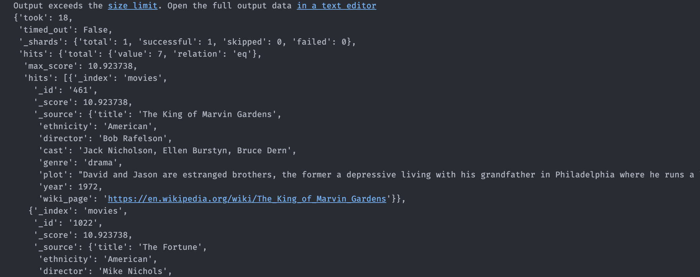

How to Use Elasticsearch in Python
Elasticsearch (ES) is a technology used by many companies, including GitHub, Uber, and Facebook. It’s not often taught in Data Science courses, but it’s something you’ll likely come across in your career.
Many data scientists have trouble setting up a local environment or understanding how to interact with Elasticsearch in Python. Furthermore, there aren’t many up-to-date resources.
That’s why I decided to create this tutorial. It will teach you the basics, and you will be able to set up an Elasticsearch cluster on your machine for local development in no time. You’ll also learn how to create an index, store data in it, and use it to search your data.
Let’s get started!
What’s Elasticsearch?
Elasticsearch is a distributed, fast, and easy-to-scale search engine capable of handling textual, numerical, geospatial, structured, and unstructured data. It’s a popular search engine for apps, websites, and log analytics. It is also a key component of the Elastic Stack (also known as ELK), which includes Logstash and Kibana.
To understand the inner workings of Elasticsearch, think of it as two distinct processes. One is ingestion, which normalizes and enriches the raw data before indexing using an inverted index. The second is retrieval, which enables users to retrieve data by writing queries that run against the index.
That’s all you need to know for now. Next, you’ll prepare your local environment to run an ES cluster.
Prerequisites
You need to set up a few things before you get started. Make sure you have these covered, and I’ll see you in the next section:
- Install docker.
- Download the necessary data.
- Create a virtual environment and install the required packages. If you like
venv, you can run these commands:
python3 -m venv .venv
source .venv/bin/activate
python3 -m pip install pandas==1.4.3 notebook==6.3.0 elasticsearch==8.7.0All good? Let’s continue.
Create a Local Elasticsearch Cluster
The easiest way to run Elasticsearch locally is by using docker.
Open a terminal and run this code to start a single-node ES cluster you can use for local development:
docker run --rm -p 9200:9200 -p 9300:9300 -e "xpack.security.enabled=false" -e "discovery.type=single-node" docker.elastic.co/elasticsearch/elasticsearch:8.7.0Once you run this command, you’ll see a lot of text on your terminal. But don’t worry, that’s fine!
This command will start an Elasticsearch cluster in your machine. There are a few things to unpack here:
docker run: It’s the command you use to run an image inside -a container.--rm: This parameter lets Docker know to clean up the container and remove the file system when the container exits.-p 9200:9200 -p 9300:9300: This tells Docker which ports to open on the container’s network interface.-e "xpack.security.enabled=false": This tells Docker to start with the security features disabled. This parameter should be set to true (or excluded) when running in production.-e "discovery.type=single-node": This tells Docker to create a cluster with a single node.
Connect to Your Cluster
Create a new Jupyter Notebook, and run the following code, to connect to your newly created ES cluster.
This will connect to your local cluster. Make sure to use http instead of https. If you don’t, you’ll get an error as you don’t have a valid SSL/TLS certificate. Note that in production, you’ll want to use https.
If everything went well, you should see an output similar to mine:
{kind=link}
Now let’s get some data in your newly created index!
Read the Dataset
Use pandas to read the dataset and get a sample of 5,000 rows from it. You’ll use a sample because otherwise, it’ll take a long time to index the documents.
import pandas as pd
df = (
pd.read_csv("wiki_movie_plots_deduped.csv")
.dropna()
.sample(5000, random_state=42)
.reset_index()
)Next, you’ll create an index to store this data.
Create an Index
An index is a collection of documents that Elasticsearch stores and represents through a data structure called an inverted index. This data structure identifies the documents in which each unique word appears.
Elasticsearch creates this inverted index when you index documents. This is how it can perform quick full-text searches.
As you can imagine, you must first create an index before you can begin indexing documents. This is how you do it:
mappings = {
"properties": {
"title": {"type": "text", "analyzer": "english"},
"ethnicity": {"type": "text", "analyzer": "standard"},
"director": {"type": "text", "analyzer": "standard"},
"cast": {"type": "text", "analyzer": "standard"},
"genre": {"type": "text", "analyzer": "standard"},
"plot": {"type": "text", "analyzer": "english"},
"year": {"type": "integer"},
"wiki_page": {"type": "keyword"}
}
}
es.indices.create(index="movies", mappings=mappings)This code will create a new index called movies using the cluster you set up earlier.
Lines 1 to 12 define a mapping, which tells the index how the documents should be stored. A mapping specifies the data types assigned to each field in the documents stored in your index.
You can use either a dynamic or explicit mapping. In a dynamic mapping, Elasticsearch detects which data type should be used for each field. In an explicit mapping, each data type is manually defined. The latter allows you greater freedom in defining each field, which is why you used one in the code above.
Now you’ll start adding data to your index.
Add Data to Your Index
You can use es.index() or bulk() to add data to an index. es.index() adds one item at a time while bulk() lets you add multiple items at the same time.
You can use any of the two methods to add data to your index:
Using es.index()
Here’s how you use es.index() to store your data:
for i, row in df.iterrows():
doc = {
"title": row["Title"],
"ethnicity": row["Origin/Ethnicity"],
"director": row["Director"],
"cast": row["Cast"],
"genre": row["Genre"],
"plot": row["Plot"],
"year": row["Release Year"],
"wiki_page": row["Wiki Page"]
}
es.index(index="movies", id=i, document=doc)This code iterates through the rows of the dataset you read earlier and adds to the index the relevant information from each row using es.index(). You use three parameters of that method:
index="movies": this tells Elasticsearch which index to use to store the data. You can have multiple indexes in a cluster.id=i: this is the document’s identifier when you add it to the index. In this case, you set it to be the row number.document=doc: this specifies to Elasticsearch what information it should store.
Using bulk()
Here’s how you use bulk() to store your data:
from elasticsearch.helpers import bulk
bulk_data = []
for i,row in df.iterrows():
bulk_data.append(
{
"_index": "movies",
"_id": i,
"_source": {
"title": row["Title"],
"ethnicity": row["Origin/Ethnicity"],
"director": row["Director"],
"cast": row["Cast"],
"genre": row["Genre"],
"plot": row["Plot"],
"year": row["Release Year"],
"wiki_page": row["Wiki Page"],
}
}
)
bulk(es, bulk_data)bulk() requires the same information as .index(): the index’s name, the document’s ID, and the document itself. But instead of adding each item one by one, you must create a list of dictionaries with all the documents you want to add to the index. Then, you pass this information and the cluster object to bulk().
After you add the data, you can make sure it worked by counting the number of items in the index:
Your output should look like this:
{kind=link}
Search Your Data Using Elasticsearch
Finally, you’ll want to start running searches using your index. Elasticsearch has a powerful DSL that lets you build many types of queries.
Here’s an example of a search that looks for movies starring Jack Nicholson but whose director isn’t Roman Polanski:
resp = es.search(
index="movies",
query={
"bool": {
"must": {
"match_phrase": {
"cast": "jack nicholson",
}
},
"filter": {"bool": {"must_not": {"match_phrase": {"director": "roman polanski"}}}},
},
},
)
resp.bodyWhen you run this code, you should get a very long response that looks something like this:
Now it’s time for you to try and build your own searches. A good starting point is the query DSL documentation.
Delete Documents From the Index
You can use the following code to remove documents from the index:
The code above will delete the document with ID 2500 from the index movies.
Delete an Index
Finally, if for whatever reason, you’d like to delete an index (and all of its documents), here’s how you do it:
Conclusion
This tutorial taught you the basics of Elasticsearch and how to use it. This will be useful in your career, as you will surely come across Elasticsearch at some point.
In this tutorial, you’ve learned:
- How to set up an Elasticsearch cluster in your machine
- How to create an index and store data in it
- How to search your data using Elasticsearch
If you have any questions or feedback, let me know in the comments!
All the code for this tutorial is available on GitHub.
Citation
@online{castillo2022,
author = {Castillo, Dylan},
title = {How to {Use} {Elasticsearch} in {Python}},
date = {2022-08-12},
url = {https://dylancastillo.co/posts/elasticseach-python.html},
langid = {en}
}